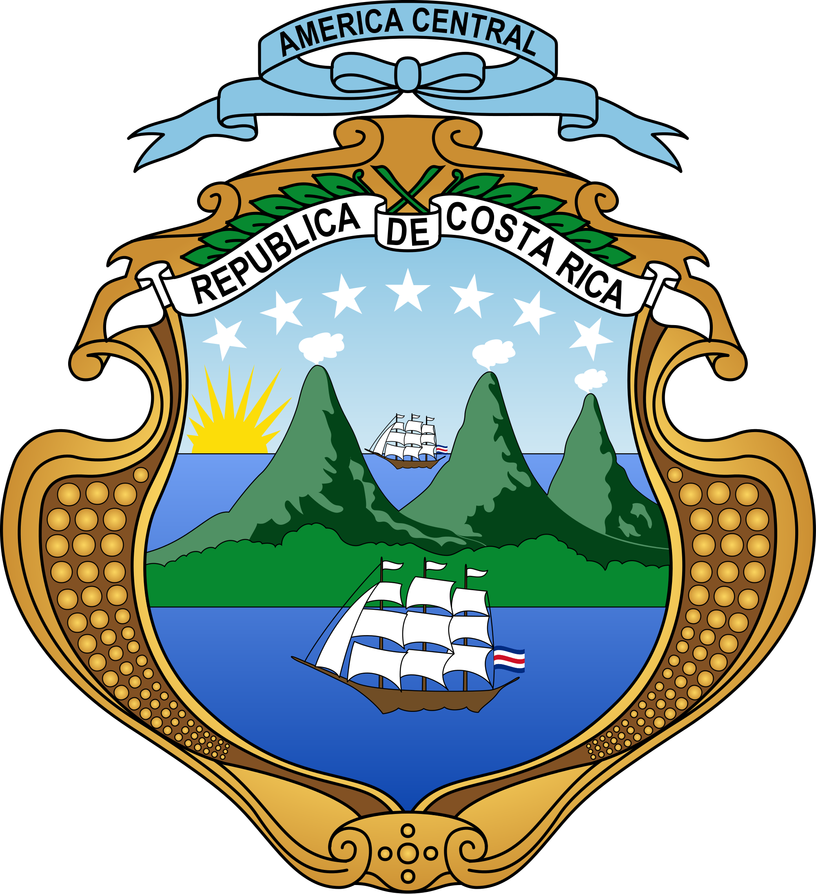

HOME
La Paz Waterfall Gardens
Located near Heredia, this attraction features stunning waterfalls, wildlife exhibits, and botanical gardens.
See More
Barva Volcano
This dormant volcano offers hiking trails through cloud forests and leads to a beautiful crater lake called "Laguna de Barva."
See More
Braulio Carrillo National Park
A lush rainforest park with diverse ecosystems, waterfalls, and an aerial tram for experiencing the canopy.
See More
Cafe Britt Coffee Tour
Learn about coffee production and processing during a guided tour of a coffee plantation.
See More